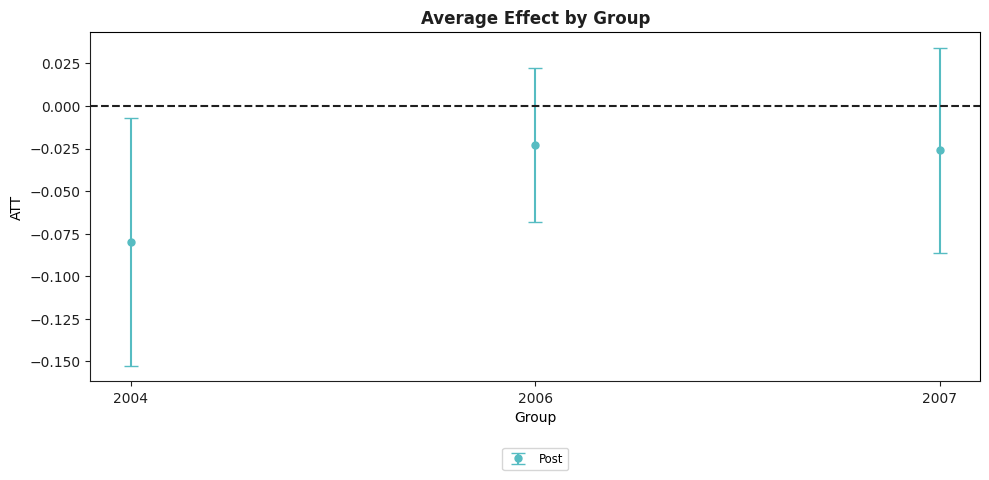

[1]:
import pandas as pd, numpy as np
from csdid.att_gt import ATTgt
[2]:
import yaml, pandas as pd
with open('../configs/data.yml') as f:
dt = yaml.safe_load(f)
path_dt = f"../{dt['mpdata']}"
data = pd.read_csv(path_dt)
yname = "lemp"
gname = "first.treat"
idname = "countyreal"
tname = "year"
xformla = f"lemp~1"
[7]:
b = ATTgt(yname, tname, idname, gname, data = data, xformla=xformla).fit()
b.plot_attgt();

[5]:
b.aggte()
b.plot_aggte();
Overall summary of ATT's based on group/cohort aggregation:
ATT Std. Error [95.0% Conf. Int.]
-0.031 0.0225 -0.0751 0.0131
Group Effects:
Group Estimate Std. Error [95.0% Simult. Conf. Band
0 2004 -0.0797 0.0371 -0.1525 -0.0070 *
1 2006 -0.0229 0.0232 -0.0684 0.0226
2 2007 -0.0261 0.0308 -0.0863 0.0342
---
Signif. codes: `*' confidence band does not cover 0
Control Group: Never Treated ,
Anticipation Periods: 0
Estimation Method: Doubly Robust

[27]:
from csdid.plots.gplot import gplot
[22]:
dta_r = b.data_plot_attgt
groups = dta_r['group'].unique()
g = groups[2]
data_ref = dta_r.query('group == @g')
gplot(data_ref)
c:\Users\Jhon\AppData\Local\Programs\Python\Python38\lib\site-packages\csdid\plots\gplot.py:20: SettingWithCopyWarning:
A value is trying to be set on a copy of a slice from a DataFrame.
Try using .loc[row_indexer,col_indexer] = value instead
See the caveats in the documentation: https://pandas.pydata.org/pandas-docs/stable/user_guide/indexing.html#returning-a-view-versus-a-copy

[22]:
<Figure Size: (640 x 480)>
[11]:
b.plot_attgt(ylim=(-.3, .3))

[11]:
<Figure Size: (640 x 480)>